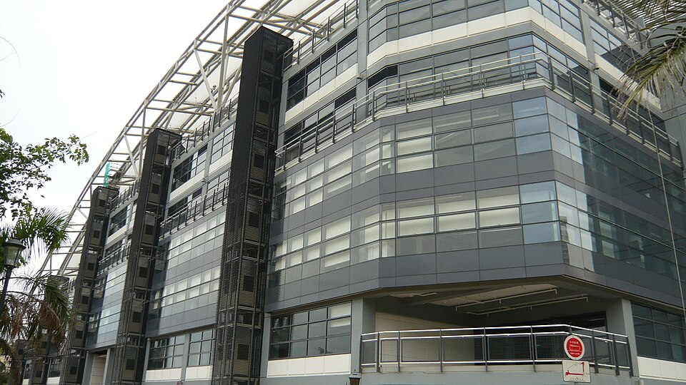

디스커버리 칼리지 교사 건물 외관 · 사진: Mintchocicecream / Wikimedia Commons, Public domain
디스커버리 칼리지(Discovery College) — 한 학교에서 13년을 보내는 구조
1. 어떤 학교인가
· 개교 — 2008년 홍콩 란타우섬 디스커버리베이(Discovery Bay)에 문을 연 것으로 알려져 있습니다.
· 운영 — ESF(English Schools Foundation) 계열 학교로 안내되고 있습니다. 그중에서도 사립 독립학교(Private Independent School)로 분류되는 것으로 알려져 있습니다.
· 학년 — Year 1부터 Year 13까지, 대략 만 5세부터 18세까지를 한 학교에서 받는 전 과정(all-through) 학교로 알려져 있습니다.
· 교육과정 — IB를 단계별로 이어서 운영하는 것으로 알려져 있습니다. PYP(초등) → MYP(중등) → 고등에서 디플로마(DP), 그리고 직업 연계 과정(CP)도 함께 안내되고 있습니다.
· 수업 언어 — 영어이며 중국어(보통화)를 함께 배우는 것으로 알려져 있습니다.
※ 학비·정원·합격률·재학생 수처럼 해마다 바뀌는 수치는 이 글에서 다루지 않습니다. 개설 과정과 학년 구성도 바뀔 수 있으니 학교 요강을 직접 확인하세요.
2. ESF라는 말부터 정리합니다
홍콩 학교를 알아보시면 ESF라는 글자가 자주 보입니다. 그런데 이게 학교 이름인 줄 아시는 분이 많습니다. 아닙니다.
· ESF는 재단 이름입니다. English Schools Foundation, 홍콩에서 영어로 가르치는 학교들을 운영하는 재단으로 알려져 있습니다. 산하에 여러 학교가 있습니다.
· 그래서 "ESF 학교"는 한 종류가 아닙니다. 학교마다 교육과정도, 입학 절차도, 학년 구성도 다릅니다.
· 운영 형태도 같지 않습니다. 디스커버리 칼리지는 ESF 산하에서 사립 독립학교로 분류되는 것으로 알려져 있습니다. 이는 같은 ESF라도 입학 규정과 운영 방식이 다를 수 있다는 뜻입니다.
실무적으로 중요한 점은 하나입니다. 다른 ESF 학교의 입학 안내를 이 학교에 그대로 적용하면 어긋납니다. 인터넷에서 "ESF 입학"으로 검색해 모은 자료는 출처가 어느 학교인지 확인하지 않으면 쓸모가 없습니다. 학교 이름을 정확히 넣고 그 학교 요강을 보시는 편이 확실합니다.
3. 핵심 — 13년이 한 흐름으로 이어진다는 것의 의미
이 학교의 가장 큰 특징은 IB를 단계별로 끊지 않고 이어 간다는 점입니다. 초등의 PYP, 중등의 MYP, 고등의 디플로마가 같은 학교 안에서 연결됩니다. 이게 실제로 무엇을 바꾸는지 정리하면 이렇습니다.
| 구간 | 무엇을 하는 시기인가 | 학부모가 놓치기 쉬운 것 |
|---|---|---|
| Year 1~6 (IB PYP) | 주제를 정해 스스로 찾아보고 정리하는 방식 | 진도표가 없어 보인다. 교과서를 따라가는 구조가 아니라 "지금 뭘 배우는지" 파악이 어렵습니다 |
| Year 7~11 (IB MYP) | 과목별 기준표(criteria)로 채점, 장기 과제 시작 | 답이 맞아도 점수가 낮다. 과정과 설명을 쓰지 않으면 항목 점수를 못 받습니다 |
| Year 12~13 (IB 디플로마·CP) | 여섯 과목 + 소논문·지식론·CAS | 기한 관리가 성적을 가른다. 과목 공부만으로는 디플로마가 나오지 않습니다 |
※ 단계별 운영 방식은 학교 방침에 따라 다를 수 있습니다. 학교 요강을 직접 확인하세요.
이어져 있다는 것은 평가 방식이 중간에 통째로 바뀌지 않는다는 뜻입니다. 미국식 학교에서 IB 학교로 옮긴 아이가 겪는 충격은 겪지 않습니다. 다만 한 학교 안에서도 단계가 바뀔 때 규칙은 달라집니다. 특히 Year 7에서 시작되는 MYP가 그렇습니다. 여기서 "우리 학교니까 알아서 이어지겠지" 하고 넘기면 성적표에서 뒤늦게 확인하게 됩니다. IB 각 단계의 세부는 IB DP 점수 완전정복에 정리해 두었습니다.
4. 한국(주재원) 학생·학부모가 겪는 어려움
· 초등에서 "뭘 배우는지" 안 보인다. PYP는 교과서 진도로 움직이지 않습니다. 부모님이 집에서 봐 주실 근거가 없어 답답해하십니다. 이때 필요한 건 진도 확인이 아니라 아이가 자기 말로 설명할 수 있는지 확인하는 것입니다.
· MYP의 기준표 채점. 한국에서 온 아이들이 가장 많이 걸리는 지점입니다. 수학을 잘하는 아이가 서술을 안 써서 점수를 잃습니다. → 성적표 읽는 법
· 장기 과제와 인용 규칙. 몇 주에 걸친 과제가 나오고, 출처를 적는 규칙이 생각보다 엄격합니다. 악의 없이 규정을 어기는 경우가 실제로 많습니다. → 학문적 정직성(Academic Integrity)
· 편입 학년에 따라 적응 부담이 다르다. PYP 시기에 들어오면 언어부터 천천히 붙일 수 있지만, MYP 중간에 들어오면 기준표 방식과 영어를 동시에 익혀야 합니다. → 편입·전학 총정리 · EAL
· 중국어(보통화)가 과목으로 들어온다. 영어만 준비하고 왔다가 중국어에서 한 번 더 부담을 느끼는 경우가 있습니다. 같은 고민은 차이니즈 인터내셔널 스쿨 글에도 정리해 두었습니다.
· 통학 동선. 이 학교는 란타우섬에 있습니다. 같은 단지에 살면 통학이 짧지만, 홍콩섬이나 구룡에서 오가면 방과 후 시간이 줄어듭니다. 과제가 많은 학교라 이 시간 차이가 생각보다 큽니다.
5. 그래서 이렇게 준비합니다
🏠 먼저 — 주거지와 학교를 같이 놓고 정한다
순서를 뒤집지 마세요. 섬 생활권 학교는 어디에 사는지가 곧 하루 일과를 정합니다. 통학에 왕복 두 시간이 들어가면 과제·활동·수업 계획이 전부 달라집니다. 학교를 정하기 전에 실제 이동 시간을 한 번 재 보시는 편이 좋습니다. → 오픈데이·학교 방문 준비법
📖 영어과외 — PYP는 "설명하는 힘", MYP는 "구조"
초등에서는 읽은 것을 자기 말로 다시 말해 보는 연습이 가장 값이 큽니다. 중등에 올라가면 여기에 주장 → 근거 → 분석의 뼈대를 얹습니다. 이 뼈대가 잡혀 있으면 디플로마의 에세이는 형식만 갈아 끼우면 됩니다. (영어 공부법 참고)
📐 수학과외 — 답이 아니라 "과정을 쓰는 연습"
알지브라·지오메트리 개념을 영어 용어와 연결하고, 풀이 과정을 영어 문장으로 적는 습관을 들입니다. MYP 기준표는 정답보다 접근·소통·적용 같은 항목을 봅니다. 서술을 쓰지 않으면 잘 풀고도 점수가 낮습니다. (알지브라 공부법 참고)
🗓️ Year 11에 디플로마 계획을 한 장으로
여섯 과목 후보, 수학 AA와 AI 중 선택, 소논문 주제 분야, 그리고 기한이 있는 요소들의 일정을 한 장에 적습니다. Year 12가 시작된 뒤에 만들면 이미 늦습니다. → 진학 카운슬러 활용법 · 입학 준비 총정리
6. 홍콩의 강점 — 시차 한 시간의 화상과외
홍콩은 한국보다 한 시간 느립니다. 홍콩 오후 4시가 한국 오후 5시라, 아이의 방과 후 시간이 한국 강사진 수업 시간과 거의 그대로 맞습니다. 통학이 먼 학교일수록 이 점이 크게 작용합니다. 이동 중에 시간을 쓰고 집에 늦게 돌아와도, 시차를 맞추느라 수업을 새벽이나 한밤으로 밀 필요가 없습니다. IB는 학교가 준 기준표를 놓고 보는 것이 가장 빠른 길입니다. 아이의 실제 과제를 화면에 띄우고 "어느 항목이 비어 있는지"부터 확인합니다. 홍콩 지역 사정은 홍콩 국제학교 과외와 홍콩 수학학원·영어학원 찾기에 정리해 두었습니다.
정리
디스커버리 칼리지는 2008년 란타우섬 디스커버리베이 개교로 알려진 ESF 계열 학교이고, Year 1부터 Year 13까지를 한 학교에서 받는 IB 전 과정 학교로 알려져 있습니다. ESF는 학교 이름이 아니라 재단 이름이므로 다른 ESF 학교의 안내를 그대로 적용하지 마세요. 그리고 한 학교에서 이어진다고 해서 단계 전환이 없는 것은 아닙니다 — Year 7의 MYP가 실제 분기점입니다. 마지막으로 이 학교는 통학 동선이 학교 선택의 일부입니다. 30분 무료 상담으로 우리 아이가 지금 어느 단계에 있는지부터 함께 짚어 보세요.